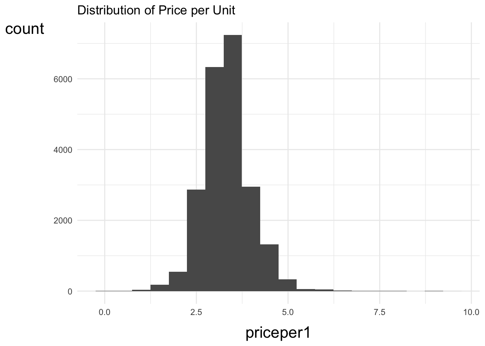
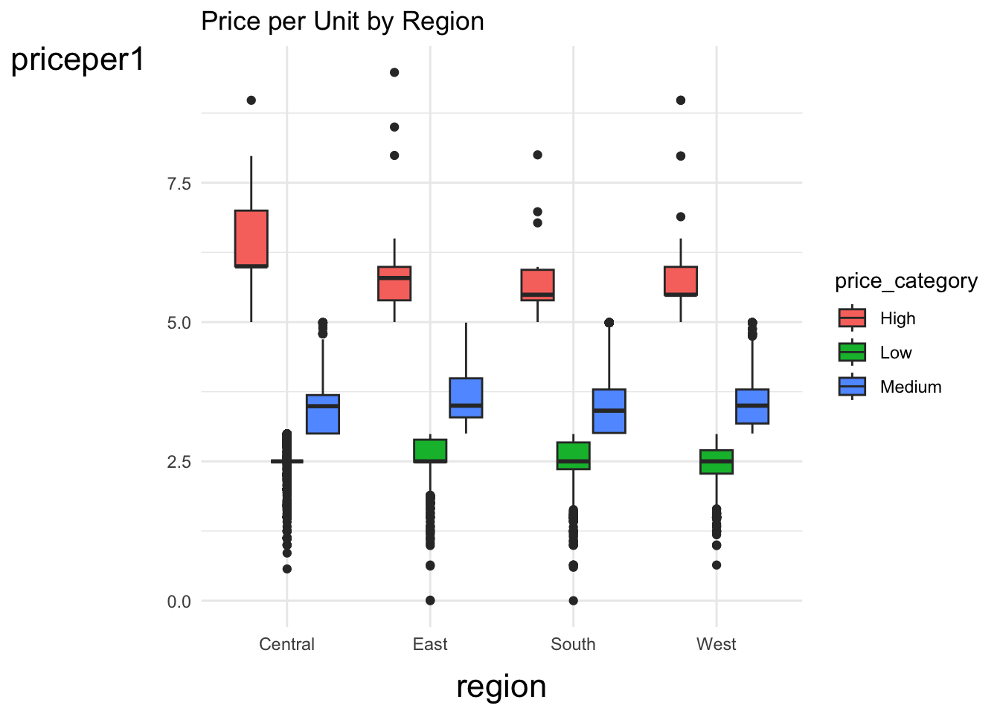
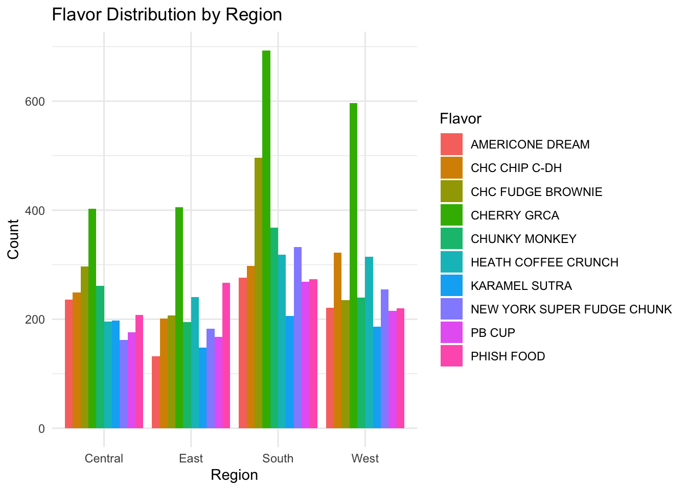
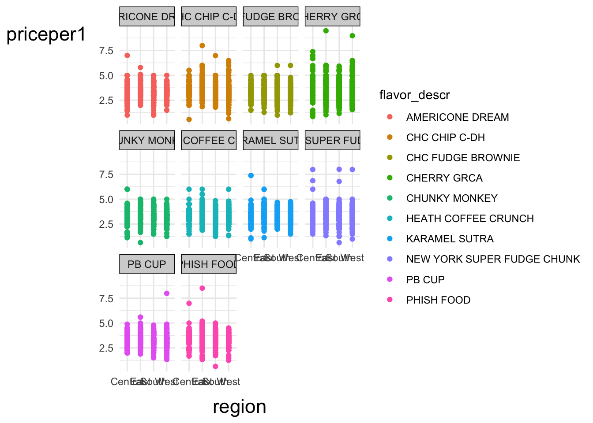

ice_cream <- read_csv("https://bcdanl.github.io/data/ben-and-jerry-cleaned.csv")Let’s analyze the icecream data:
GGplots
ggplot(ice_cream,
aes(x = priceper1)) +
geom_histogram(bins = 20) +
labs(title = "Distribution of Price per Unit")
This distribution conveys the at what price Ben and Jerry’s sells the most ice cream. According to the graph, Ben and Jerry’s recieves most sales at around $3.
ice_cream <- ice_cream |>
mutate(
price_category = case_when(
priceper1 < 3 ~ "Low",
priceper1 < 5 ~ "Medium",
TRUE ~ "High"
)
)ggplot(ice_cream,
aes(x = region,
y = priceper1,
fill= price_category)) +
geom_boxplot() +
labs(title = "Price per Unit by Region")
This visualization conveys price distribution by region with price categories of High, Medium, Low. All regions have the same Low median price of $2.50. There are many outliers outside of the box plot in each region.
top_flavors <- ice_cream |>
group_by(flavor_descr, sort = T) |>
summarise(
n = n()
) |>
arrange(desc(n)) |>
head(10)
top_flavors# A tibble: 10 × 3
# Groups: flavor_descr [10]
flavor_descr sort n
<chr> <lgl> <int>
1 CHERRY GRCA TRUE 2097
2 CHC FUDGE BROWNIE TRUE 1235
3 CHC CHIP C-DH TRUE 1070
4 HEATH COFFEE CRUNCH TRUE 1070
5 CHUNKY MONKEY TRUE 1064
6 PHISH FOOD TRUE 968
7 NEW YORK SUPER FUDGE CHUNK TRUE 932
8 AMERICONE DREAM TRUE 865
9 PB CUP TRUE 828
10 KARAMEL SUTRA TRUE 738top_data <- ice_cream |>
filter(flavor_descr %in% top_flavors$flavor_descr)flavor_region_summary <- top_data |>
count(region, flavor_descr) |>
arrange(region, desc(n))
flavor_region_summary# A tibble: 40 × 3
region flavor_descr n
<chr> <chr> <int>
1 Central CHERRY GRCA 403
2 Central CHC FUDGE BROWNIE 297
3 Central CHUNKY MONKEY 261
4 Central CHC CHIP C-DH 249
5 Central AMERICONE DREAM 236
6 Central PHISH FOOD 208
7 Central KARAMEL SUTRA 198
8 Central HEATH COFFEE CRUNCH 196
9 Central PB CUP 176
10 Central NEW YORK SUPER FUDGE CHUNK 162
# ℹ 30 more rowsggplot(flavor_region_summary,
aes(x = region, y = n, fill = flavor_descr)) +
geom_col(position = "dodge") +
labs(
title = "Flavor Distribution by Region",
x = "Region",
y = "Count",
fill = "Flavor"
) +
theme_minimal()
This visualization conveys the flavor distribution by region. Cherry GRCA is the most popular flavor among all regions. Karamel Sutra is the least popular in the South and West, while Americone Dream is least popuar in the East and New York Super Fudge Chunk in the Central region.
ggplot(top_data,
aes(x = region,
y = priceper1,
color = flavor_descr)) +
facet_wrap(~ flavor_descr) +
geom_point()
labs(
title = "Price by Region for Top Ben & Jerry's Flavors",
x = "Region",
y = "Price per Unit",
color = "Flavor"
) <ggplot2::labels> List of 4
$ x : chr "Region"
$ y : chr "Price per Unit"
$ colour: chr "Flavor"
$ title : chr "Price by Region for Top Ben & Jerry's Flavors"